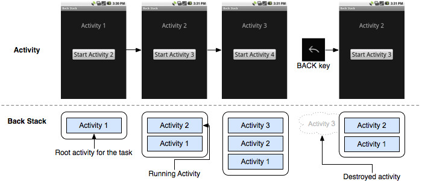
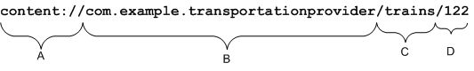
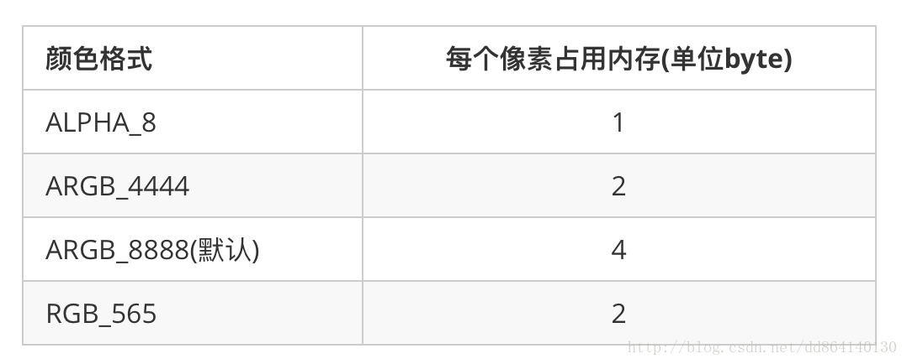

简介
Android 架构
Android 操作系统是一个软件组件的栈，在架构图中它大致可以分为五个部分和四个主要层。

-
Linux内核
不同的 Android 版本可能使用不同的 Linux 内核版本。Linux内核提供了基本的系统功能，比如进程管理，内存管理，设备管理（如摄像头，键盘，显示器）。同时，内核处理所有 Linux 所擅长的工作，如网络和大量的设备驱动，从而避免兼容大量外围硬件接口带来的不便。
-
Android 程序库
Android 开发者可用的 Android 核心程序库总结如下：
- android.app -- 提供应用程序模型的访问，是所有 Android 应用程序的基石。
- android.content -- 方便应用程序之间，应用程序组件之间的内容访问，发布，消息传递。
- android.database -- 用于访问内容提供者发布的数据，包含 SQLite 数据库管理类。
- android.opengl -- OpenGL ES 3D 图片渲染 API 的 Java 接口。
- android.os -- 提供应用程序访问标注操作系统服务的能力，包括消息，系统服务和进程间通信。
- android.text -- 在设备显示上渲染和操作文本。
- android.view -- 应用程序用户界面的基础构建块。
- android.widget -- 丰富的预置用户界面组件集合，包括按钮，标签，列表，布局管理，单选按钮等。
- android.webkit -- 一系列类的集合，允许为应用程序提供内建的 Web 浏览能力。
-
Android 运行时
Dalvik 虚拟机使得可以在 Java 中使用 Linux 核心功能，如内存管理和多线程。Dalvik 虚拟机使得每一个 Android 应用程序运行在自己独立的虚拟机进程。
Android 运行时同时提供一系列核心的库来为 Android 应用程序开发者使用标准的 Java 语言来编写 Android 应用程序。
-
应用框架
应用框架层以 Java 类的形式为应用程序提供许多高级的服务。应用程序开发者被允许在应用中使用这些服务。
- 活动管理者 -- 控制应用程序生命周期和活动栈的所有方面。
- 内容提供者 -- 允许应用程序之间发布和分享数据。
- 资源管理器 -- 提供对非代码嵌入资源的访问，如字符串，颜色设置和用户界面布局。
- 通知管理器 -- 允许应用程序显示对话框或者通知给用户。
- 视图系统 -- 一个可扩展的视图集合，用于创建应用程序用户界面。
-
应用程序
顶层中有所有的 Android 应用程序。你写的应用程序也将被安装在这层。这些应用程序包括通讯录，浏览器，游戏等。
Android开发组件
Android 使用Java语言开发。Android SDK 工具编译代码—以及任意数据并连同相关资源打包进一个Android
包内,它是一个以
.apk
为后缀的压缩文件。 一个
.apk
文件中的 所有代码就是一个程序。这个.apk文件就用于在Android设备上安装这个程序。
一旦安装成功，这个Android程序就拥有了自己独立的运行沙盒（沙盒是在受限的安全环境中运行应用程序的一种做法，这种做法是要限制授予应用程序的代码访问权限。）:
- Android操作系统是一个多用户的Linux系统，其中的每一个应用程序都是一个独立的用户。
- 默认地，系统会为每一个应用程序分配一个唯一的Linux用户ID（这个ID只能被系统使用，并且对于应用程序来说，这个ID是未知的）。系统为一个应用程序的所有文件 设置了权限，所以，只有分配给这个应用程序的用户ID可以访问它们。
- 每一个进程有它主机的虚拟机 (VM), 所以一个应用程序的代码会独立与其它的应用程序运行。
- 默认地，每一个应用程序在它自己的Linux进程中运行。Android会在一个应用程序的任何一个组件需要被调用的时候启动这个进程。然后，当没有任何组件被调用或者系统需要为其它应用程序回收内存的时候，就会 关闭这个进程。
通过这种方式，Android 系统实现了 最少特权原则。就是说，每一个应用程序，默认地，都只能调用它所需要的工作组件。 这就创造了这样一种非常安全的环境，在这个环境中，一个应用程序不能访问没有被授予其权限的系统部分。
尽管如此，也有很多途径可以让一个应用程序和其它的应用程序共享数据，也可以让一个应用程序去调用系统服务:
- 为两个应用程序分配同一个Linux用户ID是可行的，这样它们就能访问对方的文件。为了节约系统资源，拥有相同用户ID的应用程序也可以被运行于相同的Linux进程 并且共享VM（它们必须用相同的证书签名）。
- 应用程序可以通过请求权限来访问设备数据，例如联系人，SMS信息，可插拔存储（SD卡），相机，蓝牙，等等。所有的应用程序权限必须在安装的时候由用户授予。
应用程序组件
组件是一个Android程序至关重要的构建模块。每一个组件都是系统进入你的应用的不同途径。但并不是所有的组件都是用户进入程序的真实入口，其中一些要依赖于其它组件, 但是每一个组件都以自己独有的形式存在，并发挥特殊的作用；每一个组件都是一个唯一的模块，帮助你实现程序的各种行为。
有四种不同的应用程序组件。每一种组件都有其唯一的目的并且有独有的生命周期，这个生命周期定义了附件被创建和销毁的方式。
下面介绍四种类型的应用程序组件:
- Activity
-
一个 activity
为一个用户交互提供一个单独的界面。例如，一个邮件程序可能有一个activity,它展现了一个新邮件的列表。
另一个activity用来编辑邮件，还有一个是用来阅读邮件。
虽然这些activity组合在一起构成一个紧密的用户体验，但每一个都是相对独立的。
同样，其它程序也可以启动这些activity(如果这个邮件程序允许)。
例如，一个相机程序可以启动这个邮件程序的编辑邮件activity,如果用户想分享一张照片。
一个activity作为
Activity的一个子类被实现。 - Service
-
一个 service是一个运行在后台的组件。它用于执行耗时操作或者远程进程。
一个service并不提供用户交互界面。例如，当用户在使用另外一个程序的时候，一个服务可能在播放音乐或者在
通过网络获取数据，这样不会阻塞住用户与activity的交互。其它的组件，例如一个activity,可以启动一个service并让其运行或者与其绑定，绑定后可以与其交互。
一个service作为一个
Service的子类被实现。 - Content provider
-
一个content provider负责管理应用程序的数据共享集。
你可以通过文件系、SQLite数据库、网站，或者其它的你的应用程序可以访问的持久化存储位置来存储数据。 通过content
provider,其它的应用程序可以查询甚至修改你的数据（如果这个content provider允许它们这么做）。
例如，Android系统提供了一个content provider来管理联系人信息。
同样地，任何程序拥有了适当权限都可以查询这个content provider去读写某人的信息。
Content provider在读写程序的私有数据时也很有用。
一个content provider是作为
ContentProvider的一个子类被实现的。 并且必须实现一些标准的API集，这样其它的应用程序才能执行事务。 - Broadcast receiver
-
broadcast receiver 是一个用来响应系统范围内的广播的组件。 很多广播发自于系统本身。—例如,
通知屏幕已经被关闭、电池低电量、照片被拍下的广播。 应用程序也可以发起广播。—例如,
通知其它程序，一些数据被下载到了设备，且可供它们使用。 虽然广播并不提供用户交互界面，它们也可以 创建一个状态栏通知
来提醒用户一个广播事件发生了。尽管如此，更多的情形是，一个广播只是进入其它组件的一个“门路”，并试图做一些少量的工作。
例如，它可能发起一个服务，并通过服务执行与这个广播事件相关的工作。
broadcast receiver是
BroadcastReceiver的子类实现，而且每一个广播通过Intent对象来传递。
Android系统设计的一个独特方面是，任何程序都可以启动其它程序的组件。 例如，如果你想让用户使用设备相机捕捉一个相片，有另外一个程序做这件事，那么你的程序将可以调用它， 而不是你自己开发一个拍照的activity。你不必从相机程序中嵌入代码或者连链接代码也不需要。取而代之地，你可以简单地启动相机程序中拍照的activity。 当拍照完成，相片就会返回给你的程序供你使用。从用户的角度，就好像相机就是你程序的一部分。
当系统启动一个组件，它其实就启动了这个程序的进程（如果这个进程还未被启动的话）并实例化这个组件所需要的类。 例如，如果你的程序启动了相机程序里的activity去拍照，这个activity实际上是运行在相机程序的进程里，而不是你自己的进程。 因此，不像其它系统里的程序，Android程序并不是单入口的（例如它没有main方法）。
由于系统把程序运行在一个个独立的进程中，并使用文件权限来限制对其它程序的访问，所以你的程序不能从其它程序中直接激活组件。 尽管如此，Android系统可以做到！激活一个其它程序的组件，你必须向系统发送一个信息，这个信息需要指定你的intent 来启动一个指定的组件。 然后系统就会为你激活这个组件。
创建一个应用 -- 不使用IDE
1. 使用 android-sdk 命令创建
-
列出 Android 平台列表 -- 下一步要使用 TARGET-ID 为此处平台 ID
$ android list targets
-
使用 android 命令创建应用
$ android create project --target TARGET-ID --name MyApp \ --path PATH-TO-WORKSPACE/MyApp --activity MyActivity \ --package com.example.myapp # TARGET-ID 为上一步列出的 ID # PATH-TO-WORKSPACE 为项目要保存的路径
-
使用
ant生成debug版本apk$ ant debug
-
安装应用 -- 项目路径下
bin目录会生成apk$ adb install bin/MyApp-debug.apk
Activity
Activity生命周期
一个应用程序通常由多个activity组成，它们彼此保持弱的绑定状态。典型的，当一个activity在一个应用程序内被指定为主activity, 那么当程序第一次启动时，它将第一个展现在用户面前。为了展现不同的内容，每一个activity可以启动另外一个。 每当一个新的activity被启动，那么之前的将被停止。但系统将会把它压入一个栈（“back stack”即后退栈）,当一个新的activity启动，它将被 放到栈顶并获得用户焦点。后台栈遵循后进先出的栈机制。所以当用户完成当前页面并按下返回按钮时，它将被pop出栈（并销毁），之前的activity将被恢复。

Activity生命周期回调方法汇总
| 方法 | 描述 | 之后可否被杀死? | 下一个方法 |
|---|---|---|---|
| onCreate() | activity第一次被创建时调用。在这里你应该完成所有常见的静态设置工作——创建view、绑定list数据等等。
本方法传入一个包含了该activity前一个状态的Bundle对象（如果之前已捕获了状态的话，详见后面的保存Activity状态）。
下一个回调方法总是onStart()。 |
否 | onStart() |
| onRestart() | activity被停止后、又再次被启动之前调用。
下一个回调方法总是onStart() |
否 | onStart() |
| onStart() | activity要显示给用户之前调用。
如果activity进入前台，则下一个回调方法是onResume()；如果进入隐藏状态，则下一个回调方法是onStop()。 |
否 | onResume() 或 onStop() |
| onResume() | activity开始与用户交互之前调用。这时activity是在activity栈的顶端，用户可以向其中输入。
下一个回调方法总是onPause()。 |
否 | onPause() |
| onPause() | 当系统准备启动另一个正在恢复的activity时调用。这个方法通常用于把未保存的改动提交为永久数据、停止动画播放、以及其它可能消耗CPU的工作等等。
它应该非常迅速地完成工作，因为下一个activity在本方法返回前是不会被恢复运行的。
如果activity返回前台，则下一个回调方法是onResume()；如果进入用户不可见状态，则下一个是onStop() |
可以 | onResume() 或 onStop() |
| onStop() | 当activity不再对用户可见时调用。原因可能是它即将被销毁、或者其它activity（已有或新建的）被恢复运行并要覆盖本activity。
如果activity还会回来与用户交互，则下一个回调方法是onRestart()；如果这个activity即将消失，则下一个回调方法是onDestroy() |
可以 | onRestart() 或 onDestroy() |
| onDestroy() | 在本activity被销毁前调用。这是activity收到的最后一个调用。 可能是因为activity完成了工作（有些人在这里调用finish()）， 也可能是因为系统为了腾出空间而临时销毁activity的本实例。 可以利用isFinishing() 方法来区分这两种情况。 | 可以 | 无 |
任务(Task)和回收栈(Back Stack)
Task 是多个 activity 的集合，用户进行操作时将与这些 activity 进行交互。 这些 activity 按照启动顺序排队存入一个栈（即“back stack”）。
大部分 task 都启动自 Home 屏幕。当用户触摸 application launcher 中的图标（或 Home 屏幕上的快捷图标）时，应用程序的 task 就进入前台。 如果该应用不存在 task（最近没有使用过此应用），则会新建一个 task，该应用的“main”activity 作为栈的根 activity 被打开。
任务管理
Activity在manifest可配置的属性有：(参见 manifest )
- taskAffinity -- affinity 表示 activity 预期所处的 task 。 缺省情况下，同一个应用中的所有 activity 都拥有同一个 affinity 值。 因此，同一个应用中的所有 activity 默认都期望位于同一个 task 中。 不过，你可以修改 activity 默认的 affinity 值。 不同应用中的 activity 可以共享同一个 affinity 值，同一个应用中的 activity 也可以赋予不同的 task affinity 值。
-
launchMode
- standard -- 标准默认模式, 一个Task可以拥有多个Activity实例
- singleTop -- 在这种模式下，如果一个Activity实例已经存在于当前Task的最顶部，那么系统将调用onNewIntent()方法路由到这个实例，而不是创建一个新的Activity实例。
- singTask -- 这种模式下，系统创建一个新的Task，并在Task的底部实例化Activities。然而，当一个实例存在于一个独立的Task时，系统不是去创建一个新的实例，而是调用onNewIntent()路由到其他任务的实例。
- singInstance -- 除了系统不会把其它 activity 放入当前实例所在的 task 之外，其它均与"singleTask"相同。activity 总是它所在 task 的唯一成员；它所启动的任何 activity 都会放入其它 task 中。
- allowTaskReparenting -- 这种情况下，当某个 task 进入前台时，activity 的 affinity 值又与其相同，则它可以从启动时的 task 移入这个 task 中。
- clearTaskOnLaunch -- 如果 task 中根 activity 的此属性设为 "true"，则只要用户离开并再次返回该 task，栈就会被清理至根 activity。也就是说，正好与alwaysRetainTaskState相反。用户每次返回 task 时看到的都是初始状态，即使只是离开一会儿。
- alwaysRetainTaskState -- 如果 task 中根 activity 的此属性设为 "true" ，则默认的清理方式不会进行。即使过了很长时间，task 中所有的 activity 也都会保留在栈中。
- finishOnTaskLaunch -- 此属性类似于clearTaskOnLaunch，只是它只对一个 activity 有效，不是整个 task。这能让任何一个 activity 消失，包括 根 activity。如果 activity 的此属性设为 "true"，则只会保留 task 中当前 session 所涉及的内容。如果用户离开后再返回 task，它就不存在了。
Intents 标识有：
- FLAG_ACTIVITY_NEW_TASK -- 和 singleTask 一样
- FLAG_ACTIVITY_CLEAR_TOP -- 和singleTop一样
- FLAG_ACTIVITY_SINGLE_TOP -- 在这种模式下，如果启动一个已经存在于当前Task任务的Activity，那么Task顶部所有的Activity将被销毁，并且为将要启动的Activity新建一个Activity实例，存放在task的back stack的顶部。
Service
Service 概述
Service是一个应用程序组件，它能够在后台执行一些耗时较长的操作，并且不提供用户界面。服务能被其它应用程序的组件启动，即使用户切换到另外的应用时还能保持后台运行。此外，应用程序组件还能与服务绑定，并与服务进行交互，甚至能进行进程间通信（IPC）。 比如，服务可以处理网络传输、音乐播放、执行文件I/O、或者与content provider进行交互，所有这些都是后台进行的。
服务有以下两种基本类型：
- Started
-
如果一个应用程序组件（比如一个activity）通过调用
startService()来启动服务，则该服务就是被“started”了。一旦被启动，服务就能在后台一直运行下去，即使启动它的组件已经被销毁了。 通常，started的服务执行单一的操作并且不会向调用者返回结果。比如，它可以通过网络下载或上传文件。当操作完成后，服务应该自行终止。
- Bound
-
如果一个应用程序组件通过调用
bindService()绑定到服务上，则该服务就是被“bound”了。bound服务提供了一个客户端/服务器接口，允许组件与服务进行交互、发送请求、获取结果，甚至可以利用进程间通信（IPC）跨进程执行这些操作。绑定服务的生存期和被绑定的应用程序组件一致。 多个组件可以同时与一个服务绑定，不过所有的组件解除绑定后，服务也就会被销毁。
虽然本文对这两种类型的服务是分别进行简要描述的，但是你的服务仍可以同时用两种方式工作——可以是started（一直运行下去），同时也能被绑定。
只会存在一点麻烦，是否两个回调方法都要实现：实现
onStartCommand()
以允许组件启动服务、实现
onBind()
以允许绑定。
无论你的应用程序是started、bound、还是两者都支持，任何应用程序组件都可以使用此服务（即使是从另一个独立的应用程序中），
同样，任何组件都可以用这种方式使用一个activity——通过一个
Intent
启动。不过，也可以在manifest文件中把服务声明为私有private的，以便阻止其它应用程序的访问。
Service 生命周期
服务的生命周期与activity的非常类似。不过，更重要的是你需密切关注服务的创建和销毁环节，因为后台运行的服务是不会引起用户注意的。
服务的生命周期——从创建到销毁——可以有两种路径：
- 一个started服务
-
这类服务由其它组件调用
startService()来创建。然后保持运行，且必须通过调用stopSelf()自行终止。其它组件也可通过调用stopService()终止这类服务。服务终止后，系统会把它销毁。
- 一个bound服务
-
服务由其它组件（客户端）调用
bindService()来创建。然后客户端通过一个IBinder接口与服务进行通信。客户端可以通过调用unbindService()来关闭联接。多个客户端可以绑定到同一个服务上，当所有的客户端都解除绑定后，系统会销毁服务。（服务不需要自行终止。）
这两条路径并不是完全隔离的。也就是说，你可以绑定到一个已经用
startService()
启动的服务上。例如，一个后台音乐服务可以通过调用
startService()
来启动，传入一个指明所需播放音乐的 Intent。
之后，用户也许需要用播放器进行一些控制，或者需要查看当前歌曲的信息，这时一个activity可以通过调用
bindService()
与此服务绑定。在类似这种情况下，
stopService()
或
stopSelf()
不会真的终止服务，除非所有的客户端都解除了绑定。

Service 生命周期实例:
-
startService和stopService-
第一次调用
startService, Service 依次调用:onCreate->onStartCommand->onStart -
多次调用
startService, Service 调用:onStartCommand->onStart -
调用
stopService, Service 调用:onDestroy
-
第一次调用
-
bindService和unbindServiceService 和调用方运行在同一个进程:
-
第一次调用
bindService, Service 依次调用:onCreate->onBind->onServiceConnected -
多次调用
bindService, Service 无方法调用 -
如果调用
bindeService的 Activity 销毁, Service 依次调用:onUnbind->onDestroy -
调用
unbindService, Service 调用:onUnbind->onDestroy; 如果 Service 没有 bind 或 已销毁, unbindService 会引发错误
Service 运行在远程进程中,此时要实现与Service通信，直接 bindService 转换报错(就算 Service 和 调用方在同一个app中)，要使用
Messenger,参见下面的 IPC -- 进程间通信 -
第一次调用
-
综合使用
startService和bindService-
先
startService，再bindService, Service 依次调用onCreate->onStartCommand->onStart->onBind->onServiceConnected-
此时调用
unbindService, Service 调用onUnbind, 不会调用onDestroy -
此时在
unbindService后, 如果再调用bindService, Service 调用onServiceConnected, 不会调用onBind
-
此时调用
-
先
bindService，再startService, Service 依次调用onCreate->onBind->onServiceConnected->onStartCommand->onStart, 其它和上面类似 -
总结：如果 Service 已经 started (调用了 startService 或 bindService, 还没有 destroy)
只有 stopService 和 unbindService 都调用了才会调用 Service 的 onDestroy
第一次调用 bindService 时, Service 才会调用 onBind(就是说如果startService后, 第一次调用 bindService 时, Service 才会调用 onBind，哪怕是先unbindService,再次 bindService, Service 都只会调用 onServiceConnected)
-
先
IPC -- 进程间通信
这里主要介绍
Messenger
(内部也使用aidl实现) 和
AIDL
方式
当你需要进行IPC时，使用 Messenger 要比用AIDL实现接口要容易些，因为 Messenger 会把所有调用服务的请求放入一个队列。而纯粹的AIDL接口会把这些请求同时发送给服务，这样服务就必须要能够多线程运行。
android:process=":remote"
和
android:process="remote"
的区别:
-
android:process=":remote"，代表在应用程序里，当需要该service时，会自动创建新的进程。 -
而如果是
android:process="remote"，没有“:”分号的，则创建全局进程，不同的应用程序共享该进程。
使用 Messenger:
-
Server 端代码(服务提供方 APP-A 或 同一个APP):
-
AndroidManifest.xml 配置:
<service android:name=".MyService" android:process=":remote"> <intent-filter> <action android:name="action.myservice" /> <category android:name="android.intent.category.DEFAULT" /> </intent-filter> </service> -
MyService 代码(实现从请求方接收: x 和 y 两个参数, Service中实现求和,返回 sum 给请求方):
public class MyService extends Service { private final Messenger mMessenger = new Messenger(new MessengerHandler()); @Override public IBinder onBind(Intent intent) { return mMessenger.getBinder(); } private static class MessengerHandler extends Handler { @Override public void handleMessage(Message msg) { switch (msg.what) { case 1: Messenger client = msg.replyTo; int x = msg.getData().getInt("x", 0); int y = msg.getData().getInt("y", 0); Message replyMsg = Message.obtain(null, 2); Bundle bundle = new Bundle(); bundle.putString("sum", "计算结果: x + y =" + (x + y)); replyMsg.setData(bundle); try { client.send(replyMsg); } catch (RemoteException e) { e.printStackTrace(); } break; default: super.handleMessage(msg); break; } } } }
-
AndroidManifest.xml 配置:
-
Client 端代码(服务请求方 APP-B 或 同一个APP):
/** 适当时机绑定 Service */ Intent intent = new Intent("action.myservice"); bindService(intent, remote_conn, BIND_AUTO_CREATE); ServiceConnection remote_conn = new ServiceConnection() { @Override public void onServiceDisconnected(ComponentName name) { } @Override public void onServiceConnected(ComponentName name, IBinder service) { Messenger mService = new Messenger(service); Message msg = Message.obtain(null, 1); Bundle bundle = new Bundle(); int x = Integer.parseInt(input_x.getText().toString()); int y = Integer.parseInt(input_y.getText().toString()); bundle.putInt("x", x); bundle.putInt("y", y); msg.setData(bundle); /** * 增加回传关联 */ msg.replyTo = mGetRepltMessenger; try { mService.send(msg); } catch (RemoteException e) { e.printStackTrace(); } } }; /** * 增加接收回传的消息(接收Service端返回的消息) */ private Messenger mGetRepltMessenger = new Messenger(new MessengerHandler()); private class MessengerHandler extends Handler { @Override public void handleMessage(Message msg) { switch (msg.what) { case 2: // 接受跨进程回传的数据 String result = msg.getData().getString("sum"); // 显示返回的计算结果 remote_resultView.setText(result); unbindService(remote_conn);// 不使用时解除服务的绑定 break; default: super.handleMessage(msg); break; } } }
使用 AIDL:
注意：使用AIDL只有在你允许来自不同应用的客户端跨进程通信访问你的service，并且想要在你的service种处理多线程的时候才是必要的。 如果你不需要执行不同应用之间的IPC并发，你应该通过实现Binder建立你的接口，或者如果你想执行IPC，但是不需要处理多线程。那么使用Messenger实现你的接口
-
Server 端代码(服务提供方 APP-A):
-
AndroidManifest.xml 配置:
<service android:name=".AidlService" android:exported="true" android:process=":remote"> <intent-filter> <action android:name="action.aidl.myservice" /> <category android:name="android.intent.category.DEFAULT" /> </intent-filter> </service> -
创建 aidl 文件
IAidlService.aidlpackage com.example.ipc_messenger; interface IAidlService { // 这里定义一个 execute 方法用于测试 boolean execute(String arg); } -
创建一个Service, 并实现 IAidlService.aidl 文件中定义的接口
package com.example.ipc_messenger; import android.app.Service; import android.content.Intent; import android.os.IBinder; import android.os.RemoteException; public class AidlService extends Service { @Override public IBinder onBind(Intent intent) { // TODO Auto-generated method stub return null; } public class AidlServiceImpl extends IAidlService.Stub { @Override public boolean execute(String arg) throws RemoteException { // TODO Auto-generated method stub return false; } } }
-
AndroidManifest.xml 配置:
-
Client 端代码(服务提供方 APP-B):
-
复制Server 端项目目录下
gen/IAidlService.java(此文件为Android SDK工具自动生成) 到src/com/example/ipc_messenger目录下(包名与Server端创建aidl文件时相同) -
绑定到远程 Service
/** 这里通过 Action 调用,如果不在在，可能绑定异常 */ boolean state = false; try { Intent intent = new Intent(); intent.setPackage("com.example.ipc_messenger"); intent.setAction("action.aidl.myservice"); state = bindService(intent, serviceConnection, BIND_AUTO_CREATE); } catch (Exception e) { state = false; e.printStackTrace(); } -
调用远程 Service 中方法
private IAidlService myService = null; private ServiceConnection serviceConnection = new ServiceConnection() { @Override public void onServiceDisconnected(ComponentName name) { } @Override public void onServiceConnected(ComponentName name, IBinder service) { myService = IAidlService.Stub.asInterface(service); try { // 执行远程 Service 中的 execute 方法 boolean state = myService.execute("test"); } catch (RemoteException e) { e.printStackTrace(); } } };
-
复制Server 端项目目录下
Broadcast
Android 广播机制实现原理：
- 1. 广播接收者 BroadcastReceiver 通过 Binder 机制向 AMS(Activity Manager Service) 进行注册；
- 2. 广播发送者通过 Binder 机制向 AMS 发送广播；
- 3. AMS 查找符合相应条件（IntentFilter/Permission等）的 BroadcastReceiver，将广播发送到 BroadcastReceiver（一般情况下是Activity）相应的消息循环队列中；
- 4. 消息循环执行拿到此广播，回调 BroadcastReceiver 中的 onReceive() 方法。
对于不同的广播类型，以及不同的BroadcastReceiver注册方式，具体实现上会有不同。但总体流程大致如上。
广播被分为两种不同的类型：
-
普通广播 --
普通广播是完全异步的，可以在同一时刻（逻辑上）被所有广播接收者接收到，消息传递的效率比较高，但缺点是：接收者不能将处理结果传递给下一个接收者，并且无法终止广播
Intent 的传播；
Context.sendBroadcast();
-
有序广播 -- 然而有序广播是按照接收者声明的优先级别（声明在
intent-filter元素的android:priority属性中，数越大优先级别越高,取值范围:-1000 到 1000。也可以调用IntentFilter对象的setPriority()进行设置），被接收者依次接收广播。Context.sendOrderedBroadcast(); // 前面的接收者有权终止广播 BroadcastReceiver.abortBroadcast();
广播作为Android组件间的通信方式，可以使用的场景如下：
- 同一 App 内部的同一组件内的消息通信（单个或多个线程之间）；
- 同一 App 内部的不同组件之间的消息通信（单个进程）；
- 同一 App 具有多个进程的不同组件之间的消息通信；
- 不同 App 之间的组件之间消息通信；
- Android 系统在特定情况下与 App 之间的消息通信。
在上文说列举的广播机制具体可以使用的场景中，现分析实际应用中的适用性：
第一种情形：同一 App 内部的同一组件内的消息通信（单个或多个线程之间），实际应用中肯定是不会用到广播机制的（虽然可以用），无论是使用扩展变量作用域、基于接口的回调还是 Handler-post/Handler-Message等方式，都可以直接处理此类问题，若适用广播机制，显然有些“杀鸡牛刀”的感觉，会显太“重”；
第二种情形：同一 App 内部的不同组件之间的消息通信（单个进程），对于此类需求，在有些教复杂的情况下单纯的依靠基于接口的回调等方式不好处理，此时可以直接使用 EventBus 等，相对而言，EventBus 由于是针对统一进程，用于处理此类需求非常适合，且轻松解耦。
EventBus 是一款针对 Android 优化的发布/订阅事件总线。主要功能是替代 Intent, Handler, BroadCast 在 Fragment， Activity，Service，线程之间传递消息.优点是开销小，代码更优雅。以及将发送者和接收者解耦。
第三、四、五情形：由于涉及不同进程间的消息通信，此时根据实际业务使用广播机制会显得非常适宜。下面主要针对Android广播中的具体知识点进行总结。
广播的使用
-
定义 BroadcastReceiver -- 广播接收器也是运行在UI线程, 不能执行太耗时的操作,
否则将因此ANR。
public class MyReceiver extends BroadcastReceiver { @Override public void onReceive(Context context, Intent intent) { } } -
注册 BroadcastReceiver -- BroadcastReceiver 总体上可以分为两种注册类型：
-
静态注册 -- 静态广播又叫：常驻型广播，当你的应用程序关闭了，如果有广播信息来，你写的广播接收器同样的能接受到，他的注册方式就是在你的应用程序中的
AndroidManifast.xml 进行订阅的。
<receiver android:enabled=["true"|"false"] android:exported=["true"|"false"] android:icon="drawable resource" android:label="string resource" android:name="string" android:permission="string" android:process="string"> <intent-filter> <action android:name="action.xxx"/> </intent-filter> </receiver> -
动态注册 -- 动态广播又叫：非常驻型广播，当应用程序结束了，广播自然就没有了，比如你在
Activity 中的 onCreate 或者 onResume 中订阅广播，同时你必须在 onDestory 或者
onPause 中取消广播订阅。不然会报异常，这样你的广播接收器就一个非常驻型的了。
Context.registerReceiver(BroadcastReceiver receiver, IntentFilter filter); Context.registerReceiver(BroadcastReceiver receiver, IntentFilter filter, String broadcastPermission, Handler scheduler); MyBroadcastReceiver mBroadcastReceiver = null; //* 一般在 Activity 中的 onCreate 中注册动态广播 */ @Override protected void onCreate(Bundle savedInstanceState) { super.onCreate(savedInstanceState); setContentView(R.layout.activity_main); mBroadcastReceiver = new MyBroadcastReceiver(); IntentFilter intentFilter = new IntentFilter(); intentFilter.addAction(BROADCAST_ACTION); registerReceiver(mBroadcastReceiver, intentFilter); } //* 在 Activity 的 onDestroy 方法要注销这个广播 */ @Override protected void onDestroy() { super.onDestroy(); unregisterReceiver(mBroadcastReceiver); }
-
静态注册 -- 静态广播又叫：常驻型广播，当你的应用程序关闭了，如果有广播信息来，你写的广播接收器同样的能接受到，他的注册方式就是在你的应用程序中的
AndroidManifast.xml 进行订阅的。
-
广播发送
//* 1.普通广播 */ Intent intent = new Intent(); intent.setAction(BROADCAST_ACTION); intent.putExtra("name", "qqyumidi"); Context.sendBroadcast(intent); //* 2.有序广播 */ Intent intent = new Intent(BROADCAST_ACTION); Context.sendOrderedBroadcast(intent, receiverPermission); /** 3.App 应用内广播 * 3.1 对于 App 内部广播，将 exported 属性人为设为: false，使得非本 App 内部发出的此广播不被接收； * 3.2 在广播发送和接收时，都增加上相应的permission，用于权限验证； * 3.3 发送广播时，指定特定广播接收器所在的包名，具体是通过 intent.setPackage(packageName) 指定。 * 另外 v4 包中，给出了封装好的 LocalBroadcastManager 类，用于统一处理App应用内的广播问题。 */ //* 一般在 Activity 中的 onCreate 中注册动态广播 */ localBroadcastManager = LocalBroadcastManager.getInstance(this); localBroadcastManager.registerReceiver(mBroadcastReceiver, intentFilter); //* 在 Activity 的 onDestroy 方法要注销这个广播 */ localBroadcastManager.unregisterReceiver(mBroadcastReceiver); //* 发送应用内广播 */ Intent intent = new Intent(); intent.setAction(BROADCAST_ACTION); localBroadcastManager.sendBroadcast(intent);
广播使用注意事项
静态注册的广播接收器即使 App 已经退出，主要有相应的广播发出，依然可以接收到，但此种描述自Android 3.1开始有可能不再成立
Android 3.1 开始系统在 Intent 与广播相关的 flag 增加了参数，分别是 FLAG_INCLUDE_STOPPED_PACKAGES 和 FLAG_EXCLUDE_STOPPED_PACKAGES。
- FLAG_INCLUDE_STOPPED_PACKAGES：包含已经停止的包（停止：即包所在的进程已经退出）
- FLAG_EXCLUDE_STOPPED_PACKAGES：不包含已经停止的包
自 Android3.1 开始，系统本身则增加了对所有 App 当前是否处于运行状态的跟踪。在发送广播时，不管是什么广播类型，系统默认直接增加了值为 FLAG_EXCLUDE_STOPPED_PACKAGES 的 flag，导致即使是静态注册的广播接收器，对于其所在进程已经退出的 app，同样无法接收到广播。
Content Provider
ContentProvider 为存储和获取数据提供统一的接口。可以在不同的应用程序之间共享数据。
在 Android 官方指出的 Android 的数据存储方式总共有五种，分别是：Shared Preferences、网络存储、文件存储、外储存储、SQLite。但是我们知道一般这些存储都只是在单独的一个应用程序之中达到一个数据的共享，有时候我们需要操作其他应用程序的一些数据，例如我们需要操作系统里的媒体库、通讯录等，这时我们就可能通过 ContentProvider 来满足我们的需求了。
ContentProvider 向我们提供了我们在应用程序之前共享数据的一种机制，而我们知道每一个应用程序都是运行在不同的应用程序的，数据和文件在不同应用程序之间达到数据的共享不是没有可能，而是显得比较复杂，而正好 Android 中的 ContentProvider 则达到了这一需求，比如有时候我们需要操作手机里的联系人，手机里的多媒体等一些信息，我们都可以用到这个 ContentProvider 来达到我们所需。
-
ContentProvider 为存储和获取数据提供了统一的接口。ContentProvide 对数据进行封装，不用关心数据存储的细节。使用表的形式来组织数据。
-
使用 ContentProvider 可以在不同的应用程序之间共享数据。
-
Android 为常见的一些数据提供了默认的 ContentProvider（包括音频、视频、图片和通讯录等）。
Uri介绍
- 每一个 ContentProvider 都拥有一个公共的 URI，这个 URI 用于表示这个 ContentProvider 所提供的数据。
-
Android 所提供的 ContentProvider 都存放在 android.provider 包中。 将其分为
A，B，C，D 4 个部分：

-
A：标准前缀，用来说明一个 Content Provider 控制这些数据，无法改变的；"content://"
-
B：URI 的标识，用于唯一标识这个 ContentProvider，外部调用者可以根据这个标识来找到它。它定义了是哪个 Content Provider 提供这些数据。对于第三方应用程序，为了保证URI标识的唯一性，它必须是一个完整的、小写的类名。这个标识在 元素的 authorities 属性中说明：一般是定义该 ContentProvider 的包.类的名称
-
C：路径（path），通俗的讲就是你要操作的数据库中表的名字，或者你也可以自己定义，记得在使用的时候保持一致就可以了；
content://com.bing.provider.myprovider/tablename -
D：如果URI中包含表示需要获取的记录的 ID；则就返回该 id 对应的数据，如果没有 ID，就表示返回全部；
content://com.bing.provider.myprovider/tablename/## 表示数据 id。
路径（path）可以用来表示我们要操作的数据，路径的构建应根据业务而定，如下: 1、要操作 person 表中 id 为 10 的记录，可以构建这样的路径: /person/10 2、要操作 person 表中 id 为 10 的记录的 name 字段，可以构建这样的路径: person/10/name 3、要操作 person 表中的所有记录，可以构建这样的路径: /person 5、当然要操作的数据不一定来自数据库，也可以是文件、xml 或网络等其他存储方式，如下: 要操作 xml 文件中 person 节点下的 name 节点，可以构建这样的路径：/person/name 6、如果要把一个字符串转换成 Uri，可以使用 Uri 类中的 parse()方法，如下： Uri uri = Uri.parse("content://com.bing.provider.personprovider/person") -
UriMatcher 类使用介绍
因为 Uri 代表了要操作的数据，所以我们经常需要解析 Uri，并从 Uri 中获取数据。Android 系统提供了两个用于操作 Uri 的工具类，分别为 UriMatcher 和 ContentUris 。掌握它们的使用，会便于我们的开发工作。
首先第一步把你需要匹配 Uri 路径全部给注册上，如下：
// 常量 UriMatcher.NO_MATCH 表示不匹配任何路径的返回码
UriMatcher sMatcher = new UriMatcher(UriMatcher.NO_MATCH);
// 如果 match() 方法匹配 content://com.bing.procvide.personprovider/person 路径，返回匹配码为 1
sMatcher.addURI("com.bing.procvide.personprovider", "person", 1);
// 如果 match() 方法匹配 content://com.bing.provider.personprovider/person/230 路径，返回匹配码为 2
sMatcher.addURI("com.bing.provider.personprovider", "person/#", 2);// # 号为通配符
switch(sMatcher.match(Uri.parse("content://com.ljq.provider.personprovider/person/10"))) {
case 1:
break;
case 2:
break;
default: // 不匹配
break;
}
注册完需要匹配的 Uri 后，就可以使用 sMatcher.match(uri) 方法对输入的 Uri
进行匹配，如果匹配就返回匹配码，匹配码是调用 addURI() 方法传入的第三个参数，假设匹配
content://com.ljq.provider.personprovider/person
路径，返回的匹配码为 1
ContentUris 类使用介绍
ContentUris 类用于操作 Uri 路径后面的 ID 部分，它有两个比较实用的方法：
withAppendedId(uri, id)
用于为路径加上 ID 部分：
Uri uri = Uri.parse("content://com.bing.provider.personprovider/person")
Uri resultUri = ContentUris.withAppendedId(uri, 10);
// 生成后的 Uri 为：content://com.bing.provider.personprovider/person/10
parseId(uri)
方法用于从路径中获取ID部分：
Uri uri = Uri.parse("content://com.ljq.provider.personprovider/person/10")
long personid = ContentUris.parseId(uri); // 获取的结果为:10
使用 ContentProvider 共享数据
ContentProvider类主要方法的作用：
// 该方法在 ContentProvider 创建后就会被调用，Android 开机后，ContentProvider 在其它应用第一次访问它时才会被创建。 public boolean onCreate() // 该方法用于供外部应用往 ContentProvider 添加数据。 public Uri insert(Uri uri, ContentValues values) // 该方法用于供外部应用从 ContentProvider 删除数据。 public int delete(Uri uri, String selection, String[] selectionArgs) // 该方法用于供外部应用更新 ContentProvider 中的数据。 public int update(Uri uri, ContentValues values, String selection, String[] selectionArgs) // 该方法用于供外部应用从 ContentProvider 中获取数据。 public Cursor query(Uri uri, String[] projection, String slction, String[] slctionArgs, String sortOrder) // 该方法用于返回当前 Uri 所代表数据的 MIME 类型。 public String getType(Uri uri)
如果操作的数据属于集合类型，那么 MIME 类型字符串应该以
vnd.android.cursor.dir/
开头，例如：要得到所有 person 记录的Uri为
content://com.bing.provider.personprovider/person
，那么返回的 MIME 类型字符串应该为：
vnd.android.cursor.dir/person
。
如果要操作的数据属于非集合类型数据，那么 MIME 类型字符串应该以
vnd.android.cursor.item/
开头，例如：得到 id 为 10 的person记录，Uri 为
content://com.bing.provider.personprovider/person/10
，那么返回的MIME类型字符串为：
vnd.android.cursor.item/person
。
ContentResolver 操作 ContentProvider 中的数据
1. 当外部应用需要对 ContentProvider 中的数据进行添加、删除、修改和查询操作时，可以使用 ContentResolver 类来完成，要获取 ContentResolver 对象，可以使用 Activity 提供的 getContentResolver()方法。
2. ContentResolver 类提供了与 ContentProvider 类相同签名的四个方法：
// 该方法用于往 ContentProvider 添加数据。 public Uri insert(Uri uri, ContentValues values) // 该方法用于从 ContentProvider 删除数据。 public int delete(Uri uri, String selection, String[] selectionArgs) // 该方法用于更新 ContentProvider 中的数据。 public int update(Uri uri, ContentValues values, String selection, String[] selectionArgs) // 该方法用于从 ContentProvider 中获取数据。 public Cursor query(Uri uri, String[] projection, String slction, String[] slctionArgs, String sortOrder)
这些方法的第一个参数为 Uri，代表要操作的 ContentProvider 和对其中的什么数据进行操作， 其实和
ContentProvider 里面的方法是一样的。他们所对应的数据, 最终是会被传到我们在之前程序里面定义的那个
ContentProvider 类的方法, 假设给定的是：
Uri.parse("content://com.bing.providers.personprovider/person/10")
，那么将会对主机名为
com.bing.providers.personprovider
的 ContentProvider 进行操作，操作的数据为 person 表中id为 10 的记录。
使用 ContentResolver 对 ContentProvider 中的数据进行添加、删除、修改和查询操作：
ContentResolver resolver = getContentResolver();
Uri uri = Uri.parse("content://com.bing.provider.personprovider/person");
// 添加一条记录
ContentValues values = new ContentValues();
values.put("name", "bingxin");
values.put("age", 25);
resolver.insert(uri, values);
// 获取 person 表中所有记录
Cursor cursor = resolver.query(uri, null, null, null, "personid desc");
while(cursor.moveToNext()){
Log.i("ContentTest", "personid="+ cursor.getInt(0)+ ",name="+ cursor.getString(1));
}
// 把 id 为 1 的记录的 name 字段值更改新为 zhangsan
ContentValues updateValues = new ContentValues();
updateValues.put("name", "zhangsan");
Uri updateIdUri = ContentUris.withAppendedId(uri, 2);
resolver.update(updateIdUri, updateValues, null, null);
// 删除 id 为 2 的记录
Uri deleteIdUri = ContentUris.withAppendedId(uri, 2);
resolver.delete(deleteIdUri, null, null);
监听 ContentProvider 中数据的变化
如果 ContentProvider 的访问者需要知道 ContentProvider 中的数据发生变化，可以在
ContentProvider 发生数据变化时调用
getContentResolver().notifyChange(uri, null)
来通知注册在此URI上的访问者，例子如下：
public class PersonContentProvider extends ContentProvider {
public Uri insert(Uri uri, ContentValues values) {
db.insert("person", "personid", values);
getContext().getContentResolver().notifyChange(uri, null);
}
}
如果 ContentProvider 的访问者需要得到数据变化通知，必须使用 ContentObserver 对数据（数据采用 uri 描述）进行监听，当监听到数据变化通知时，系统就会调用 ContentObserver 的 onChange() 方法：
getContentResolver().registerContentObserver(
Uri.parse("content://com.ljq.providers.personprovider/person"),
true, new PersonObserver(new Handler()));
public class PersonObserver extends ContentObserver {
public PersonObserver(Handler handler) {
super(handler);
}
public void onChange(boolean selfChange) {
// 此处可以进行相应的业务处理
}
}
Handler 机制
异步消息处理: 线程启动后会进入一个无限的循环体之中，每循环一次，从其内部的消息队列中取出一个消息，然后回调相应的消息处理函数，执行完成一个消息后则继续循环。若消息队列为空，线程则会阻塞等待。
Looer.loop() 方法可能会引起主线程的阻塞，但只要它的消息循环没有被阻塞，能一直处理事件就不会产生 ANR 异常。
Looper: 将 Looper 对象和线程绑定，能够确保线程持续存活并且可以不断的从任务队列中获取任务并进行执行；
ThreadLocal: ThreadLocal 其实是一个 Map，其 key 为一个线程；
MessageQueue: MessageQueue 有个 LinkedBlockingQueue 队列，此队列的出队方法为阻塞式，没有消息则一直等待。
Handler: 能够帮助实现队列任务的管理，不仅仅能够把任务插入到队列的头部，尾部，还可以按照一定的时间延迟来确保任务从队列中能够来得及被取消掉；
Message: 对象包装消息，并绑定到一个 Handler 实例；
HandlerThread: 把上面组件打包到一起进行协作。
Handler 机制流程：
1. Looper 初始化, 先调用 Looper.prepare() 方法，将 Looper 对象和主线程绑定(因为在主线程调用此方法)，执行以下操作：
1.1 ThreadLocal.get() 是否为空，ThreadLocal 其实是一个 Map, map.get(Thread.currentThread()) 是否为空；
1.2 不为空直接抛出异常，因为一个线程只能绑定一个 Looper 对象；为空就调用 ThreadLocal.set()；
1.3 其实是将当前线程和 Looper 绑定, map.put(Thread.currentThread(), new Looper())
1.3.1 Looper 有一个 MessageQueue 的私有成员，绑定 Looper 就相当于绑定了一个 MessageQueue 对象;
1.3.2 MessageQueue 有个 LinkedBlockingQueue 队列，此队列有出队方法为阻塞式，没有消息则一直等待。
1.4 经过上一步，当前线程（主线程）就和 Looper 对象绑定了, 也相当于绑定了 MessageQueue 队列。
2. Handler 初始化, 将创建 Hander 的线程（主线程）和 Looper 的 MessageQueue 队列绑定。
Handler 对象也有一个 MessageQueue 成员，将 Handler 的 messageQueue 值设置为 Looper 的 MessageQueue
this.messageQueue = Looper.myLooper().messageQueue
Looper.myLooper() 方法 ThreadLocal.get(), 也就是 map.get(Thread.currentThread()), 返回当前线程的 Looper
3. Handler 方法调用，消息发送
3.1 Message 对象包装消息，并绑定到一个 Handler 实例
3.2 Handler 消息发送，比如：Handler.sendMessage(Message msg) 方法
3.2.1 将 Message 绑定到 Handler, msg.target = this;
3.2.2 将 Message 加入消息队列，messageQueue.enqueueMessage(msg)。
4. Handler 消息处理，在 Looper.prepare() 完成后，就调用了 Looper.loop() 方法(主线程调用)，此方法就像如下:
Looper looper = myLooper(); // 拿到当前线程的 Looper
MessageQueue messageQueue = looper.messageQueue; // 拿到 Looper 的消息队列
// 进入死循环，一直等待消息进入队列，等到就处理
while(true) {
Message message = messageQueue.next(); // 阻塞式，没有消息则一直等待
message.target.handleMessage(message); // 将消息交给 Message 绑定的 Handler 处理
}
Java 模拟 Android Handler 机制
-
Message -- 绑定 Handler 对象，包装消息
public class Message { Handler target; public Object obj; public int what; @Override public String toString() { return "what=" + what + " obj=" + obj.toString(); } } -
Handler -- 处理消息
public class Handler { private MessageQueue messageQueue; public Handler() { Looper looper = Looper.myLooper(); if (looper == null) { throw new RuntimeException( "Can't create handler inside thread that has not called Looper.prepare()"); } this.messageQueue = looper.messageQueue; } public void sendMessage(Message msg) { // Looper循环中发现message后，调用message.targer就得到了当前handler，使用taget.handleMessage // 就把消息转发给了发送message时的handler的handleMessage函数 msg.target = this; messageQueue.enqueueMessage(msg); } public void handleMessage(Message msg) {} } -
ThreadLocal -- 提供线程和Looper的关联, 保证每一个线程只创建唯一一个Looper
public class ThreadLocal<T> { private Map<Thread , T> map; public ThreadLocal() { map = new HashMap<>(); } public void set(T obj) { map.put(Thread.currentThread(), obj); } public T get() { return map.get(Thread.currentThread()); } } -
MessageQueue -- 阻塞式消息队列, 主要是 LinkedBlockingQueue 的 take
方法
public class MessageQueue { private BlockingQueue<Message> blockingQueue = new LinkedBlockingQueue<>(); /** * 阻塞式，没有消息则一直等待 * 关键代码在这里，LinkedBlockingQueue，若blockingQueue为空，等到blockingQueue有数据为止 * (等到后获取并移除此队列的头部) */ public Message next() { try { return blockingQueue.take(); } catch (InterruptedException e) { throw new RuntimeException(); } } /** * 插入到消息队列尾部 */ void enqueueMessage(Message message) { try { blockingQueue.put(message); } catch (InterruptedException e) { e.printStackTrace(); } } } -
Looper -- 不断从MessageQueue中取消息
public class Looper { private static final ThreadLocal<Looper> threadLocal = new ThreadLocal<>(); /** * 存储Message的队列，阻塞式，没有消息则一直等待 */ final MessageQueue messageQueue; private Looper() { messageQueue = new MessageQueue(); } /** * 为该线程创建Looper， 若该线程已经有Looper了则不需要再次调用prepare */ public static void prepare() { if (threadLocal.get() != null) { throw new RuntimeException( "Only one Looper may be created per thread"); } threadLocal.set(new Looper()); } public static void loop() { Looper looper = myLooper(); if (looper == null) { throw new RuntimeException( "No Looper; Looper.prepare() wasn't called on this thread."); } MessageQueue messageQueue = looper.messageQueue; while(true) { Message message = messageQueue.next(); message.target.handleMessage(message); } } /** * 获取当先线程的Looper */ public static Looper myLooper() { return threadLocal.get(); } } -
Main -- 测试
public class Main { public static void main(String[] args) { new Main().start(); } private void start() { Looper.prepare(); onCreate(); // 死循环，阻塞式 Looper.loop(); } private void onCreate() { // //////////////////////////////////////////////////////// // //// 下面的操作相当于运行在android的UI线程中 //////////// // //////////////////////////////////////////////////////// final Thread thread = Thread.currentThread(); System.out.println("main thread=" + thread); Handler handler = new Handler() { @Override public void handleMessage(Message msg) { // 若thread == Thread.currentThread()，则证明已经运行在主线程中了 System.out.println("current thread is main thread? " + (thread == Thread.currentThread())); System.out.println(msg); System.out.println(); } }; // 测试1 主线程创建handler，子线程使用该handler发送消息 new Thread() { public void run() { try {// 模拟耗时操作 Thread.sleep(1000 * 2); } catch (InterruptedException e) { } Message message = new Message(); message.obj = "new Thread" + Thread.currentThread(); message.what = (int) System.currentTimeMillis(); // 在子线程中发送消息 handler.sendMessage(message); try { Thread.sleep(1000 * 2); } catch (InterruptedException e) { } message = new Message(); message.obj = "hanler...waht==1"; message.what = 1; // 在子线程中发送消息 handler.sendMessage(message); message = new Message(); message.obj = "hanler...waht==2"; message.what = 2; // 在子线程中发送消息 handler.sendMessage(message); message = new Message(); message.obj = "hanler...waht==3"; message.what = 3; // 在子线程中发送消息 handler.sendMessage(message); }; }.start(); } }
Theme 和 Style
主题 Theme
在
Androidmenifast.xml
文件中，通过
application或者在 activity
节点的
android:theme="xxx"
属性可以引入应用使用的主题，统一控制应用的风格。
主题和样式继承：
主题和样式的继承有两种方式：
... parent="xxx"或者name="x.y"主题和样式只允许单继承：
x.y.z继承自x.y; 如果指定了parent,那么样式名字不再具备继承功能,比如:<style name="x.y.z" parent="m">這個主題繼承自 m,不再繼承 x.y通过
.的方式,只能继承同一进程的样式,比如不能继承系统的样式.
1. 系统主题 -- Android 系统自带了很多主题，通过
android:theme="@android:style/xxx"
引入。
不同 Android 版本引入了很多不同的主题：
API 1-10: android:Theme 根主题 // 一般一个主题还会有以下样式的子主题: XXX.Black 背景黑色 XXX.Light 背景白色 XXX.Wallpaper 以桌面墙纸为背景 XXX.Translucent 透明背景 XXX.Panel 平板风格 XXX.Dialog 对话框风格 API 11-13: android:Theme.Holo 主要特点是轻快的颜色、适当的阴影、卡片化布局、方角矩形。 API 14-20: Theme.DeviceDefault 设备默认根主题 API 21+: Theme.Material 平面主题
2. 自定义主题(包括 v7 兼容包) -- v7 包中的主题和自定义主题是一样的.通过
android:theme="@style/xxx"
引入。
Theme.AppCompat 这个主题的表现要看引入包的版本: appcompat-v7:21+ -- api 21 以上为 Theme.Material appcompat-v7:20- -- api 21 以下为 Theme.Holo
Style 常用属性 -- 这里只研究公有属性,关于 View 的属性参考: View 类的 XML 属性
colorPrimary -- 基础色值,ActionBar 默认使用这个颜色为背景 colorPrimaryDark -- 基础色值黑暗变型,StatusBar 默认使用这个颜色为背景 colorAccent -- 基础色值亮色变型,EditText 这用这个颜色作为有焦点时候的光标色值 windowActionBar -- 是否使用 ActionBar windowNoTitle -- 是否使用标题，如果为 true, ActionBar 也不可见 android:windowBackground -- 窗体的背景颜色,引用类型,可以为 @drawable / @color android:windowNoTitle -- 这个是系统的标题栏，AppCompat 的 ActionBar 与它无关，也就是说可能同时存在 android:actionBarSize -- ActionBar 高度 android:windowFullscreen -- 是否为全屏模式，无状态栏 android:windowTranslucentNavigation -- 半透明导航栏，半透明显示 android:windowBackground 的颜色 android:windowTranslucentStatus -- 半透明状态栏，半透明显示 android:windowBackground 的颜色 android:statusBarColor -- 状态栏颜色 android:navigationBarColor -- 导航栏颜色 android:windowLightStatusBar -- 状态栏还存在，但是图标全部消失, API 23 android:windowIsFloating -- Dialog 样式的 Activity, 无标题栏和 ActionBar android:windowCloseOnTouchOutside -- 和上面同时使用有效果，点击 Window 外围，Activity 退出 android:windowSoftInputMode -- 输入法模式 android:resizeableActivity -- 分屏, API 24 才支持 android:windowAnimationStyle -- 指定窗体动画样式名字，参见 Animation 的 Activity 跳转动画 下面的几种： android:activityOpenEnterAnimation -- ActivityA 启动下一个 ActivityB, ActivityB 的进入动画 android:activityOpenExitAnimation -- ActivityA 启动下一个 ActivityB, ActivityA 的退出动画 android:activityCloseEnterAnimation -- ActivityB 退出, ActivityA 的进入动画 android:activityCloseExitAnimation -- ActivityB 退出动画 android:windowHideAnimation -- 当窗口从 VISIBLE 到 INVISIBLE 时使用的动画 android:windowShowAnimation -- 当窗口从 INVISIBLE 到 VISIBLE 时使用的动画 android:windowEnterAnimation -- 当窗口被添加动画 android:windowExitAnimation -- 当窗口被移除动画 android:fragmentOpenEnterAnimation -- android:fragmentOpenExitAnimation -- android:fragmentCloseEnterAnimation -- android:fragmentCloseExitAnimation -- android:fragmentFadeEnterAnimation -- android:fragmentFadeExitAnimation -- android:taskOpenEnterAnimation -- android:taskOpenExitAnimation -- android:taskCloseEnterAnimation -- android:taskCloseExitAnimation -- android:taskToBackEnterAnimation -- android:taskToBackExitAnimation -- android:taskToFrontEnterAnimation -- android:taskToFrontExitAnimation -- android:windowActivityTransitions -- Window 是否允许 Activity 变换 android:windowContentTransitions -- Window 是否允许 Content 变换 android:windowAllowReturnTransitionOverlap -- 是否允许下一个 Activity 变换覆盖 android:windowAllowEnterTransitionOverlap -- 是否允许将回到的 Activity 变换覆盖 android:windowContentOverlay -- Content 是否使用 Overlay 变换 android:windowActionBarOverlay -- ActionBar 是否使用 Overlay 变换 android:windowActionModeOverlay -- ActionMode 是否使用 Overlay 变换 android:fragmentAllowEnterTransitionOverlap -- android:fragmentAllowReturnTransitionOverlap -- android:fragmentEnterTransition -- android:fragmentExitTransition -- android:fragmentReenterTransition -- android:fragmentReturnTransition -- android:windowSharedElementEnterTransition -- android:windowSharedElementExitTransition -- android:windowSharedElementReenterTransition -- android:windowSharedElementReturnTransition -- android:windowSharedElementsUseOverlay -- fragmentSharedElementEnterTransition -- fragmentSharedElementReturnTransition --
尺寸单位和换算
Android 常见的尺寸单位有：
-
px-- 是 pixel 的缩写，意为像素，屏幕上的点。 -
dp / dip-- 是 device independent pixels 的缩写，设备独立像素，Android 特有的单位，在屏幕密度 dpi = 160 屏幕上，1dp = 1px。 -
sp-- 和 dp 很类似，一般用来设置字体大小，和 dp 的区别是它可以根据用户的字体大小偏好来缩放。 -
mm-- 表示毫米，是屏幕的物理尺寸。 -
in-- 表示英寸，是屏幕的物理尺寸。每英寸等于2.54厘米。这些尺寸是屏幕的对角线长度。 -
pt-- 是一个标准的长度单位，1pt＝1/72英寸。
另外还有两个参数和尺寸单位相关：
-
dpi -- 是 Dots Per Inch 的缩写, 每英寸点数，即每英寸包含像素个数。如果一个
320 * 480分辨率的手机，宽 2 英寸，高 3 英寸, 每英寸包含的像素点的数量为320 / 2 = 160dpi（横向）或480 / 3 = 160dpi（纵向），160 就是这部手机的 dpi，横向和纵向的这个值都是相同的，原因是大部分手机屏幕使用正方形的像素点。 -
density -- 屏幕密度，屏幕上每平方英寸（2.54 平方厘米）中含有的像素点数量。
另外，关于图片在不同的 drawable 目录下的缩放比例请查看：drawable 目录
dip 和 px 转换
# 以一个 4.95 英寸 1920 * 1080 的 nexus5 手机设备为例： # 1.计算对角线的像素(勾股定理) 1920^2 + 1080^2 = 2202^2 # 2.计算 DPI(对角线像素 / 屏幕的物理尺寸) 2202 / 4.95 = 445 # 3.计算像素 px = dip * dpi / 160 1 * 445 / 160 = 2.78 # 4.通过上面的计算可以看出在此设备上 1 dip = 2.78 px, 事实并不是如此，其中的关键值 dpi 并不是我们算出来的 445,见下文：
Android 中内置了几个默认的 Dpi ，在特定的分辨率下自动调用，也可以手动在配置文件中修改。
| ldpi | mdpi | hdpi | xhdpi | xxhdpi | |
|---|---|---|---|---|---|
| 分辨率 | 240x320 | 320x480 | 480x800 | 720x1280 | 1080x1920 |
| 系统dpi | 120 | 160 | 240 | 320 | 480 |
| 基准比例 | 0.75 | 1 | 1.5 | 2 | 3 |
因此，在 1920*1080 分辨率的手机上默认就使用 480 的 dpi ，不管的你的尺寸是多大都是这样，除非厂家手动修改了配置文件：
# 5.因此默认 1920*1080 分辨率的手机上默认就使用 480 的 dpi 1 dip * 480 / 160 = 3 px # 6.配置文件路径：/system/build.prop，指定了设备所使用的 dpi ro.sf.lcd_density=480 # 7.如果更改上面的配置文件: ro.sf.lcd_density=320 1 dip * 320 / 160 = 2 px
实际应用:
DisplayMetrics dm = new DisplayMetrics();
getWindowManager().getDefaultDisplay().getMetrics(dm);
dm.widthPixels; // 获取屏幕宽度的像素数量
dm.heightPixels; // 获取屏幕高度的像素数量
dm.ydpi; // 得到物理屏幕上 Y 轴方向每英寸的像素(dip)
dm.xdpi; // 得到物理屏幕上 X 轴方向每英寸的像素(dip)
dm.density; // 获取当前设备的基准比例
dm.densityDpi; // 获取系统 dpi，随着 build.prop 文件中的代码而改变。
/** 附几个常用的方法 */
public static int getScreenWidth(Activity cx) {
DisplayMetrics dm = new DisplayMetrics();
cx.getWindowManager().getDefaultDisplay().getMetrics(dm);
return dm.widthPixels;
}
public static int getScreenHeight(Activity cx) {
DisplayMetrics dm = new DisplayMetrics();
cx.getWindowManager().getDefaultDisplay().getMetrics(dm);
return dm.heightPixels;
}
public static int convertDip2Px(Context context, int dip) {
float scale = context.getResources().getDisplayMetrics().density;
return (int)(dip * scale + 0.5f * (dip >= 0 ? 1 : -1));
}
public static int convertPx2Dip(Context context, int px) {
float scale = context.getResources().getDisplayMetrics().density;
return (int)(px / scale + 0.5f * (px >= 0 ? 1 : -1));
}
public static int sp2px(Context context, float spValue) {
float fontScale = context.getResources().getDisplayMetrics().scaledDensity;
return (int) (spValue * fontScale + 0.5f);
}
public static int px2sp(Context context, float pxValue) {
float fontScale = context.getResources().getDisplayMetrics().scaledDensity;
return (int) (pxValue / fontScale + 0.5f);
}
图片加载及框架
大量图片的加载和高精度图片的加载，这两种操作都是会导致应用程序OOM(OutOfMemory)的问题发生，合理的图片加载和图片内存管理就是必须解决的问题，以下将提供一个比较完善的技术方案，解决这两个问题。
首先，我们必须明确为什么会发生OOM(OutOfMemory)的问题，其原因就是因为在APP运行过程中，所使用的系统内存超出了当前APP的最大可用内存，就发生了OOM的问题。
Android 应用可使用最大内存： 这个值的定义一般在
/system/build.prop
文件中, 最大内存限制:
dalvik.vm.heapsize=512m
, 普通内存限制
dalvik.vm.heapgrowthlimit=192m
, 就是说应用最大可使用内存为 192 M(这是在 nexus 5 设备中), 通过在应用
AndroidManifest.xml
中的 application 节点配置
android:largeHeap="true"
时，应用可使用的最大内存就为 512 M。在应用中也可以拿到这个数值：
Runtime.getRuntime().maxMemory() / 1024 / 1024
, 此时的单位为 MB。
图片占用内存计算：Android中Bitmap的默认加载使用ARGB_8888，每个像素会占用4byte，因为每个像素有两个Chanel，因此一个512*512的图片，无论什么格式，加载进入内存都占用512*512*4*2=2MB，所以，Android图片占用内存大小，只与图片的分辨率（像素）以及加载使用的色彩模式有关
要解决OOM的问题，从两方面进行优化：
- 合理加载资源
- 合理回收资源
合理加载资源: 如果展示图片的ImageView只有128*96的像素大小，这时候把一张1024*768的图片完全加载到内存中，很明显是错误的行为。这个时候，就需要把要加载的图片进行压缩加载，就是合理地加载资源。
图片的压缩讲解，设置BitmapFactory.Options中inSampleSize的值就可以实现等比例压缩。比如我们有一张2048*1536像素的图片，将inSampleSize的值设置为4，就可以把这张图片压缩成512*384像素。原本加载这张图片需要占用26M的内存，压缩后就只需要占用1.5M了。下面的方法可以根据传入的宽和高，计算出合适的inSampleSize值：
-
根据传入的宽和高，计算出合适的inSampleSize值：
public static int calculateInSampleSize(BitmapFactory.Options options, int reqWidth, int reqHeight) { // 源图片的高度和宽度 final int height = options.outHeight; final int width = options.outWidth; int inSampleSize = 1; if (height > reqHeight || width > reqWidth) { // 计算出实际宽高和目标宽高的比率 final int heightRatio = Math.round((float) height / (float) reqHeight); final int widthRatio = Math.round((float) width / (float) reqWidth); // 选择宽和高中最小的比率作为inSampleSize的值，这样可以保证最终图片的宽和高 // 一定都会大于等于目标的宽和高。 inSampleSize = heightRatio < widthRatio ? heightRatio : widthRatio; } return inSampleSize; } -
计算出合适的缩放比例后，接着进行图片的实际压缩操作：
public static Bitmap decodeSampledBitmapFromResource(Resources res, int resId, int reqWidth, int reqHeight) { // 第一次解析将inJustDecodeBounds设置为true，来获取图片大小 final BitmapFactory.Options options = new BitmapFactory.Options(); options.inJustDecodeBounds = true; BitmapFactory.decodeResource(res, resId, options); // 调用上面定义的方法计算inSampleSize值 options.inSampleSize = calculateInSampleSize(options, reqWidth, reqHeight); // 使用获取到的inSampleSize值再次解析图片 options.inJustDecodeBounds = false; return BitmapFactory.decodeResource(res, resId, options); }
合理回收资源: 既对加载在内存中的图片资源进行合理的回收，避免因为不再使用的图片资源还留存在内存中的情况出现。而要实现合理回收资源，最核心的一个类就是：LruCache，这个类非常适用于保存图片内存，它的主要算法原理是把最近使用的对象用强引用存储在 LinkedHashMap 中，并且把最近最少使用的对象在缓存值达到预设定值之前从内存中移除。
// 初始化 LruCache, 设置 LruCache 的最大存储为 可用内存的 1 / 8
public void initMemoryCache() {
int maxMemory = (int) (Runtime.getRuntime().maxMemory() / 1024);
// 使用最大可用内存值的1/8作为缓存的大小。
int cacheSize = maxMemory / 8;
mMemoryCache = new LruCache(cacheSize) {
@Override
protected int sizeOf(Object key, Object bitmap) {
// 重写此方法来衡量每张图片的大小，默认返回图片数量。
int size = ((Bitmap) bitmap).getByteCount() / 1024;
return size;
}
};
}
public void addBitmapToMemoryCache(String key, Bitmap bitmap) {
if (getBitmapFromMemCache(key) == null) {
mMemoryCache.put(key, bitmap);
}
}
public Bitmap getBitmapFromMemCache(String key) {
return (Bitmap) mMemoryCache.get(key);
}
只要确保整个APP的图片资源的使用，都是通过 addBitmapToMemoryCache 和 getBitmapFromMemCache 来进行，即可避免图片问题引发的OOM的问题。
Android 图片加载框架 Glide 和 UniversalImageLoader
Glide 是一个 Android 上的图片加载和缓存库，它不仅能实现平滑的图片列表滚动效果，还支持远程图片的获取、大小调整和展示，并且可以加载 Gif 动态图，可谓功能强大。Glide的集成离不开v4包，所以必须添加support包。
项目位置 -- glide-3.7.0.jar -- 项目源码 github.com
Glide 如同 ImageLoader 一样，也是可以配置一些属性的，Glide 可以在 GlideModel 中统一配置其属性。
// GlideModel 可以在 AndroidManifest.xml 文件中注册，以便 Glide 能够找到你的 Module
<meta-data
android:name="xx.yy.GlideModelConfig"
android:value="GlideModule" />
public class GlideModelConfig implements GlideModule {
int diskSize = 1024 * 1024 * 100;
// 取1/8最大内存作为最大缓存
int memorySize = (int) (Runtime.getRuntime().maxMemory()) / 8;
@Override
public void applyOptions(Context context, GlideBuilder builder) {
// 定义缓存大小和位置
builder.setDiskCache(new InternalCacheDiskCacheFactory(context,
diskSize)); // 内存中
builder.setDiskCache(new ExternalCacheDiskCacheFactory(context,
"cache", diskSize)); // sd卡中
// 默认内存和图片池大小
MemorySizeCalculator calculator = new MemorySizeCalculator(context);
// 默认内存大小
int defaultMemoryCacheSize = calculator.getMemoryCacheSize();
// 默认图片池大小
int defaultBitmapPoolSize = calculator.getBitmapPoolSize();
// 该两句无需设置，是默认的
builder.setMemoryCache(new LruResourceCache(defaultMemoryCacheSize));
builder.setBitmapPool(new LruBitmapPool(defaultBitmapPoolSize));
// 自定义内存和图片池大小
builder.setMemoryCache(new LruResourceCache(memorySize));
builder.setBitmapPool(new LruBitmapPool(memorySize));
// 定义图片格式
builder.setDecodeFormat(DecodeFormat.PREFER_ARGB_8888);
builder.setDecodeFormat(DecodeFormat.PREFER_RGB_565); // 默认
}
@Override
public void registerComponents(Context context, Glide glide) {
}
}
Glide 的常用方法:
// 1.加载网络图片 Glide.with(this).load(url).into(imageView); // 2.加载本地图片 File file = new File(getExternalCacheDir() + "/image.jpg"); Glide.with(this).load(file).into(imageView); // 3.加载应用资源 int resource = R.drawable.image; Glide.with(this).load(resource).into(imageView); // 4.加载二进制流 byte[] image = getImageBytes(); Glide.with(this).load(image).into(imageView); // 5.加载Uri对象 Uri imageUri = getImageUri(); Glide.with(this).load(imageUri).into(imageView); // 6.加载占位图 Glide.with(this).placeholder(R.drawable.loading); // 7.加载错误图片 Glide.with(this).error(R.drawable.error); // 8.禁用缓存 /** * DiskCacheStrategy.ALL：两个都缓存 * DiskCacheStrategy.NONE：不缓存 * DiskCacheStrategy.SOURCE：缓存原始图片 * DiskCacheStrategy.RESULT：缓存压缩过的结果图片 */ Glide.with(this).diskCacheStrategy(DiskCacheStrategy.NONE); // 9.只允许加载静态图片, Glide 支持直接加载 Gif, asBitmap() 方法不需要Glide去帮我们自动进行图片格式的判断 Glide.with(this).asBitmap(); // 10.指定图片大小 Glide.with(this).override(100, 100); // 11.显示动画, 这个动画只在初次加载出来时使用，已经加载过了，下载再从缓存中取是不会动画的。 Glide.with(this).animate(Animator animator);// 或者int animationId Glide.with(this).dontAnimate();// 去除动画 // 12.图片拉伸 // 长的一边撑满 Glide.with(this).centerCrop(); // 短的一边撑满 Glide.with(this).fitCenter(); // 13.转换器 -- 提供各式各样的Api可以将图片转为各种形状，例如圆形，圆角型等等 /** * glide-transformations -- 一个基于Glide的transformation库，拥有裁剪，着色，模糊，滤镜等多种转换效果 * url -- https://github.com/wasabeef/glide-transformations */ // 单独转换器效果（毛玻璃为例） Glide.with(this).load(R.mipmap.login) .bitmapTransform(new BlurTransformation(this, 20)) .into(imageView); // 复合转换器效果(毛玻璃加图角) Glide.with(this).load(R.mipmap.login) .bitmapTransform(new BlurTransformation(this, 20), new CropCircleTransformation(this)) .into(imageView); // 14.缓存的动态清理 Glide.get(this).clearDiskCache(); // 清理磁盘缓存 需要在子线程中执行 Glide.get(this).clearMemory(); // 清理内存缓存 可以在UI主线程中进行 // 15.暂停／恢复加载, GirdView, ListView 加载图片, 而当我们快速滑动 GridView，ListView，我们希望能停止图片的加载 Glide.with(this).pauseRequests(); // 停止图片的加载 Glide.with(this).resumeRequests(); // 恢复加载
Android-Universal-Image-Loader 是一个开源的 UI 组件程序，该项目的目的是提供一个可重复使用的仪器为异步图像加载，缓存和显示。
项目位置 -- universal-image-loader-1.9.5.jar -- 项目源码 github.com
图片加载器 ImageLoader 的配置参数:
public class MyApplication extends Application {
@Override
public void onCreate() {
super.onCreate();
// 创建默认的ImageLoader配置参数
ImageLoaderConfiguration configuration = ImageLoaderConfiguration
.createDefault(this);
/** 自定义的参数配置
File cacheDir = StorageUtils.getCacheDirectory(context);
ImageLoaderConfiguration config = new ImageLoaderConfiguration.Builder(context)
// max width, max height，即保存的每个缓存文件的最大长宽
.memoryCacheExtraOptions(480, 800)
// 设置缓存的详细信息，最好不要设置这个
.diskCacheExtraOptions(480, 800, CompressFormat.JPEG, 75, null)
.taskExecutor(...)
.taskExecutorForCachedImages(...)
.threadPoolSize(3) // 线程池内加载的数量
.threadPriority(Thread.NORM_PRIORITY - 1) // 线程优先级
.tasksProcessingOrder(QueueProcessingType.FIFO)
.denyCacheImageMultipleSizesInMemory()
// 内存缓存大小, 这样计算: int memorySize = (int) (Runtime.getRuntime().maxMemory()) / 8;
.memoryCache(new LruMemoryCache(memorySize)) // 内存缓存实现
.memoryCacheSize(memorySize)
.memoryCacheSizePercentage(13)
.diskCache(new UnlimitedDiscCache(cacheDir))// 缓存路径
.diskCacheSize(50 * 1024 * 1024) // 硬盘缓存 50MB
.diskCacheFileCount(100) // 缓存的File数量
// 将保存的时候的URI名称用HASHCODE加密
.diskCacheFileNameGenerator(new HashCodeFileNameGenerator())
.imageDownloader(new BaseImageDownloader(context))
.imageDecoder(new BaseImageDecoder()) // default
.defaultDisplayImageOptions(DisplayImageOptions.createSimple()) // default
.writeDebugLogs()
.build();
*/
// Initialize ImageLoader with configuration.
ImageLoader.getInstance().init(configuration);
}
}
Android-Universal-Image-Loader 常用方法:
// 1.加载网络图片
// displayImage 加载
ImageLoader.getInstance().displayImage(url, image);
// loadImage 加载
ImageLoader.getInstance().loadImage(imageUrl, new ImageLoadingListener() {
@Override
public void onLoadingStarted(String imageUri, View view) {
}
@Override
public void onLoadingFailed(String imageUri, View view,
FailReason failReason) {
}
@Override
public void onLoadingComplete(String imageUri, View view, Bitmap loadedImage) {
mImageView.setImageBitmap(loadedImage);
}
@Override
public void onLoadingCancelled(String imageUri, View view) {
}
});
// 2.指定大小
ImageSize mImageSize = new ImageSize(100, 100);
ImageLoader.getInstance().loadImage(imageUrl, mImageSize, new SimpleImageLoadingListener(){
@Override
public void onLoadingComplete(String imageUri, View view,
Bitmap loadedImage) {
super.onLoadingComplete(imageUri, view, loadedImage);
mImageView.setImageBitmap(loadedImage);
}
});
// 3.配置图片
DisplayImageOptions options = new DisplayImageOptions.Builder()
.showImageOnLoading(R.drawable.ic_stub) // 设置图片在下载期间显示的图片
.showImageForEmptyUri(R.drawable.ic_stub) // 设置图片Uri为空或是错误的时候显示的图片
.showImageOnFail(R.drawable.ic_error) // 设置图片加载/解码过程中错误时候显示的图片
.cacheInMemory(false) // 设置下载的图片是否缓存在内存中
.cacheOnDisc(true) // 设置下载的图片是否缓存在SD卡中
.considerExifParams(true) // 保留Exif信息
.imageScaleType(ImageScaleType.EXACTLY_STRETCHED) // 设置图片以如何的编码方式显示
.bitmapConfig(Bitmap.Config.RGB_565) // 设置图片的解码类型
// 设置图片的解码配置
// .decodingOptions(android.graphics.BitmapFactory.Options.decodingOptions)
.considerExifParams(true)
.delayBeforeLoading(100) // 设置图片下载前的延迟
// .preProcessor(BitmapProcessor preProcessor) // 设置图片加入缓存前，对bitmap进行设置
.resetViewBeforeLoading(true) // 设置图片在下载前是否重置，复位
// .displayer(new RoundedBitmapDisplayer(20)) // 是否设置为圆角，弧度为多少
.displayer(new FadeInBitmapDisplayer(100)) // 淡入
.build();
// displayImage 配置
DisplayImageOptions options = new DisplayImageOptions.Builder()
.showImageOnLoading(R.drawable.ic_stub) // 加载图片
.showImageOnFail(R.drawable.ic_error) // 错误图片
.cacheInMemory(true) // 内存缓存
.cacheOnDisk(true) // SD 缓存
.bitmapConfig(Bitmap.Config.RGB_565)
.build();
ImageLoader.getInstance().displayImage(imageUrl, mImageView, options);
// loadImage 来配置
ImageSize mImageSize = new ImageSize(100, 100);
ImageLoader.getInstance().loadImage(imageUrl, mImageSize, options, new SimpleImageLoadingListener(){
@Override
public void onLoadingComplete(String imageUri, View view,
Bitmap loadedImage) {
super.onLoadingComplete(imageUri, view, loadedImage);
mImageView.setImageBitmap(loadedImage);
}
});
// 5.本地加载
String imagePath = "/mnt/sdcard/image.png";
String imageUrl = Scheme.FILE.wrap(imagePath);
ImageLoader.getInstance().displayImage(imageUrl, mImageView, options);
// 6.GirdView, ListView 加载图片, 而当我们快速滑动GridView，ListView，我们希望能停止图片的加载
listView.setOnScrollListener(new PauseOnScrollListener(imageLoader, pauseOnScroll, pauseOnFling));
gridView.setOnScrollListener(new PauseOnScrollListener(imageLoader, pauseOnScroll, pauseOnFling));
Universal-Image-Loader 框架 OOM 的问题:
- 减少线程池中线程的个数，在 ImageLoaderConfiguration 中的 （.threadPoolSize） 中配置，推荐配置1-5
- 在 DisplayImageOptions 选项中配置 bitmapConfig为Bitmap.Config.RGB_565 ，因为默认是 ARGB_8888， 使用 RGB_565 会比使 用ARGB_8888 少消耗2倍的内存
- 在 ImageLoaderConfiguration 中配置图片的内存缓存为 memoryCache(new WeakMemoryCache()) 或者不使用内存缓存
- 在 DisplayImageOptions 选项中设置 .imageScaleType(ImageScaleType.IN_SAMPLE_INT) 或者 imageScaleType(ImageScaleType.EXACTLY)
Fragment 使用
Android 在 3.0 中引入了 fragments 的概念,主要目的是用在大屏幕设备上--例如平板电脑上,支持更加动态和灵活的UI设计. 平板电脑的屏幕要比手机的大得多,有更多的空间来放更多的UI组件,并且这些组件之间会产生更多的交互. Fragment 允许这样的一种设计,而不需要你亲自来管理 view hierarchy 的复杂变化. 通过将 activity 的布局分散到 fragment 中, 你可以在运行时修改 activity 的外观, 并在由 activity 管理的 back stack 中保存那些变化.
Fragment生命周期
Fragment 生命周期图

Fragment 与 Activity 对比图

Fragment 的几个子类
-
DialogFragment -
显示浮动对话框。使用此类创建对话框可有效地替代使用
Activity类中的对话框帮助程序方法，因为您可以将片段对话框纳入由 Activity 管理的片段返回栈，从而使用户能够返回清除的片段。 -
ListFragment -
显示由适配器（如
SimpleCursorAdapter）管理的一系列项目，类似于ListActivity。它提供了几种管理列表视图的方法，如用于处理点击事件的onListItemClick()回调。 -
PreferenceFragment -
以列表形式显示
Preference对象的层次结构，类似于PreferenceActivity。这在为您的应用创建“设置” Activity 时很有用处。
向 Activity 添加片段
-
在 Activity 的布局文件内声明片段
<?xml version="1.0" encoding="utf-8"?> <LinearLayout xmlns:android="http://schemas.android.com/apk/res/android" android:orientation="horizontal" android:layout_width="match_parent" android:layout_height="match_parent"> <fragment android:name="com.example.news.ArticleListFragment" android:id="@+id/list" android:layout_weight="1" android:layout_width="0dp" android:layout_height="match_parent" /> <fragment android:name="com.example.news.ArticleReaderFragment" android:id="@+id/viewer" android:layout_weight="2" android:layout_width="0dp" android:layout_height="match_parent" /> </LinearLayout> -
通过编程方式将片段添加到某个现有 ViewGroup
FragmentManager fragmentManager = getFragmentManager(); FragmentTransaction fragmentTransaction = fragmentManager.beginTransaction(); ExampleFragment fragment = new ExampleFragment(); fragmentTransaction.add(R.id.fragment_container, fragment); fragmentTransaction.commit();
- 添加没有 UI 的片段
FragmentManager fragmentManager = getFragmentManager(); FragmentTransaction fragmentTransaction = fragmentManager.beginTransaction(); /** * 无UI的 Fragment, 不会调用 Fragment 的 onCreateView() 方法, * 从 Activity 中获取片段，则需要使用 findFragmentByTag()。 */ fragmentTransaction.add(fragment, tag);
管理片段
您可以使用
FragmentManager
执行的操作包括：
-
通过
findFragmentById()（对于在 Activity 布局中提供 UI 的片段）或findFragmentByTag()（对于提供或不提供 UI 的片段）获取 Activity 中存在的片段 -
通过
popBackStack()（模拟用户发出的 Back 命令）将片段从返回栈中弹出 -
通过
addToBackStack()将 Fragment 添加到回退栈, 该返回栈由 Activity 管理，允许用户通过按“返回” 按钮返回上一片段状态。 -
通过
addOnBackStackChangedListener()注册一个侦听返回栈变化的侦听器
内存管理和分析
Android 应用优化
对Android应用进行优化的一些经验,共计八个维度:
1.布局优化
为什么?
Android系统每个16ms发出VSYNC信号,触发对UI的渲染,要想达到界面流畅,必须实现60fps,也就意味着大多数的操作必须在16ms完成.
除了上面界面过于复杂导致渲染不能及时完成之外,还存在过度绘制问题.所谓过度绘制就是某个像素在同一帧的时间内被绘制多次.在多层次的UI界面中,如果不可见的UI也在进行绘制,那么这些重合区域的像素就会被绘制多次,从而浪费大量的CPU和GPU资源.过度绘制也发生在背景重叠的情况下,比如Layout中有自己的背景,同时子View中又有自己的背景.
如何检测?
- 使用HierarchyViewer来查找Activity中的布局是否过于复杂
- 在开发者选项中打开Show GPU Overdraw选项进行观察是否存在过度绘制
- 在开发者选项中选择Profile GPU Rendering,选中On screen as bar
- 使用TraceView来观察CPU执行情况
如何优化?
- 减少布局的层级,合理的使用include,merge,ViewStub
- 自定义组件的onDraw()中避免大量创建临时对象,比如String,以免频繁触发GC
- 自定义组件的onDraw()中,考虑使用canvas.clipRect()绘制需要被绘制的区域
- 对像ListView这样的组件容器,考虑使用convertView,使用ViewHolder,
- 考虑使用性能更高的组件,比如推荐使用RecycleView来代替ListView,使用staticlayout来实现自动换行
2.内存优化
为什么?
资源总是有限的,内存同样也是一种资源.在Android当中,过度的/不恰当占用内存资源,会导致应用频繁被杀死,最终也会影响用户的整体体验.任何一名开发者,都应该将节省内存牢记心中.
如何检测?
- 使用LeakCanary
- 使用MAT分析Java堆
- 使用Android Device Monitor中的Application Tracker追踪内存分配信息
- Android Studio中的Android Monitor,选择其中的Memory
如何优化?
-
主动的释放内存,在onLowMemory()和onTrimMemory()中适当的释放内存
-
避免内存泄漏和内存溢出
-
在使用Bitmap的时候,考虑对其进行压缩,使用缓存或者改变颜色模式,比如android默认的颜色格式是ARGB_8888,在要求不高的情况下可以采用RGB__565,这样每个像素 占用的内存就可懂4byte到2byte.
-
减少帧动画的使用,如果需要,通过SurfaceView实现
-
使用更轻量级的数据结构,比如ArrayMap/SparseArray
-
合理的使用相关组件,比如Service和Webview,在不需要的时候主动结束其生命周期
-
合理的使用多进程,比如像音乐播放器类,可以分为主进程和播放进程
-
使用异步队列时考虑有界队列
-
如果你能明确知道HashMap的大小,那就再初始化时为其制定容量
3.电量优化
为什么?
电量是移动设备非常宝贵的资源,作为一名开发者,有必要为用户着想,减少电量的消耗.调查显示通常只有30%左右的电量是被程序核心的功能所消耗,比如界面渲染,剩下的70%则是被上报数据,位置更新,后台通知所消耗.
如何检测?
- 手机选项中通过查看APP的电量消耗的统计数据
- 使用 Battery Historian Tool 来查看详细的电量消耗
如何优化?
- 减少唤醒屏幕的次数与持续的时间,正确的使用WakeLock.
- 延迟非必须的操作到充电状态时,比如日志上报完全可以在夜间充电时完成,这点可以结合JobScheduler使用
- 使用传感器采集数据时,一旦不需要记得取消注册.
- 减少网络通信,合并通信.
- 合理使用定位功能,减少位置更新频率以及根据实际情况使用不同精度的定位需求
4.网络优化
为什么?
现在App几乎都需要联网操作,做好网络优化一方面可以提高体验,另一方面可以减少流量和电量的损耗.另外,无论是对用户还是网络服务提供者,网络同样是一种资源,任何开发者都不应该假设网络资源是无限制的.
如何检测?
- 使用Android Studio里的Network Traffic Tools来查看网络请求
- 使用Android Studio中的Monitor
- 使用Fidder或者Charles等抓包工具分析网络数据包
如何优化?
- 有必要的时候务必做好缓存,无论是图片还是普通的数据,使用LruCache和DiskLruCache构建自己的缓存系统,并根据实际场景设计缓存策略
- 避免过度的网络同步,合并相关的网络请求
- 根据实际场景确定请求策略,避免使用固定的间隔频率来进行网络操作.比如连接WiFi并充电的情况下请求频率可以高,第一次网络请求失败后可以使用双倍的时间间隔来进行下一次
- 减少数据传输量,对传输的数据做压缩.如果传输的是图片,需要选择合适的图片格式以及根据显示大小请求合适规格的图片.对于普通数据,可以考虑使用ProtocalBuffers来减小传输数据的大小.
- 某些情况下可以采用IP直连,一方面可以减少DNS解析时间,另一方面可以防止域名劫持
5.启动优化
为什么?
启动优化看起来并不是那么必要,但从心理学角度而言,越快的启动速度往往给及将发送者和接收者解耦。 用户以性能好,高效可靠的心理暗示,这就很容易让用户对其产生好感,为你后面打动用户留下了余地.
如何检测?
- 使用Method Tracing
- 使用Systrace,比如在onCreate中添加trace.beginSection()和trace.endSection()
-
使用
adb shell am start -W [packageName]/[packageName.MainActivity]测量冷启动时间
如何优化?
- Activity的onCreate()中减少复杂和耗时的操作
- Application的onCreate(),attachBaseContext()中同样减少复杂和耗时的操作,但是对于很多App在此处会执行大量组件和服务的初始化操作,如果可能考虑并行初始化
- 提供自定义启动窗口,比如将一张图片通过设置主题的方式显示为启动窗口.
- 优化布局
6.体积优化
为什么?
对用户而言,无论是用户空间还是网络,亦或是时间,都是资源.体积优化就是为用户节省资源的重要一环.如果你现在做的是SDK类产品,那么体积优化同样重要.
如何检测?
- 使用Android Lint检查没有使用的资源
如何优化?
- 减少不必要的依赖库/Jar,在满足需求的前提下优先选择体积小的.
- 使用Proguard工具进行代码瘦身,优化,混淆
- 减少so文件的数量,根据实际情况提供so文件
- 使用Gradle中的shrinkResource来将无用的代码和资源排除在APK安装包之外
- 减少图片资源的大小,考虑图片压缩或者使用Vertor Drawable替代png/jpeg
- 有选择的提供对应分辨率的图片资源
- 复用已经存在的图片,多用通过代码对已有图片进行变换的方式实现复用
- 使用插件化技术(如果项目简单就不要使用)
7.性能优化
能发挥出100%的能力就不要只发挥其中的50%,这对应用而言并非坏事.同样的价格卖给用户两辆车,我想大多数人会选择性能更好的.
如何检测?
- 使用Lint执行静态分析,在Android Studio的Analysis->Inspect Code
- 在开发者选项中开启StrictMode或者在代码中开启
- 代码Review
如何优化?
- 任务并行化,对可能的任务进行并行操作,多借助线程池而非直接使用线程
- 如何需要序列化数据,优先考虑Android自身提供的而非Java提供的Serializable
- 选择合适的数据结构,明确List/Set/Map/Stack操作的复杂度
- 使用Android提供更高效的容器,比如使用ArrayMap来代替HashMap,此外还是有SparseBoolMap,SparseIntMap,SparseLongMap
- 使用静态常量代替Enum类型,可以减少至少两倍的内存消耗
- 使用对象池技术,比如提供想String一样的对象池
- 使用缓存技术
- 字符串拼接操作有限使用StringBuilder
- 对相关的算法和逻辑进行优化,减少不必要的流程
- 采用JNI,对计算量较大的逻辑将其协程so文件,如图片处理
8.业务优化
除了上述比较通用的优化方案之外,也应该花点时间放在业务优化上.很多时候,迫于时间压迫,当前实现业务的方案并非最优.比如为了支持多张图片上传,很多人直接使用串行操作,尽管这样做容易实现,但是却并非最佳.
由于每个产品的业务并不相同,也就很难有通用的优化方案,这里又两个目标值得思考:
- 如果有可能,串行业务并行化
- 如果有可能,简化业务流程.将一大象关进冰箱的方法就是打开冰箱,将大象放进去,最后关闭冰箱.
之所以把业务优化放在最后的根本原因是业务优化的风险较高,需要团队的整体配合来完成.

默认的是
ARGB_8888
,其中ARGB分别代表的是透明度,红色,绿色,蓝色,每个值分别用8位来记录,也就是一个像素会占用4byte,共32位. 而
ARGB_4444
和以上很类似,但是每个值分别用4位来记录,也就是一个像素会占用2byte,共16位. RGB_565
则分别用5位,6位,5位来记录每个值,不存在透明度,每个像素会占用2byte,共16位. ALPHA_8
:该像素只保存透明度,会占用1byte,共8位. 在实际应用中而言,值推荐使用
ARGB_8888
以及
RGB_565
,如果你不需要透明度,那么就选择
RGB_565
,可以减少一半的内存占用.